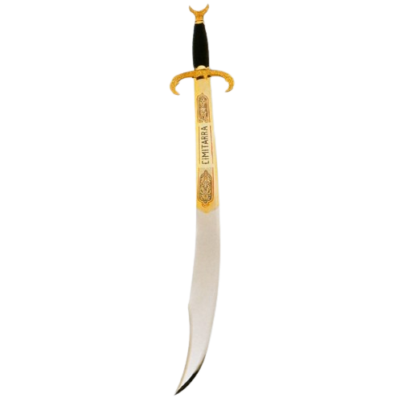

Primera aparición: Temporada 2 - Capítulo 8
Usuarios: Loki, X
Creador: Loki
Descripción: Una de las 12 armas divinas, una espada curvada que posee la habilidad de reflejar ataques físicos y mágicos cuando el usuario quiera y devolverlas con el doble de potencia. El creador de dicha arma es el dios nórdico Loki. Esta arma es una de las más versátiles y ha desaparecido hace cientos de años hasta que lo encontró casualmente X. Al fusionarse con el arma poseerás una armadura capaz de reflejar cualquier ataque duplicando el poder, pero el daño producido por el ataque lo sigues recibiendo, por lo que es un arma de doble filo.